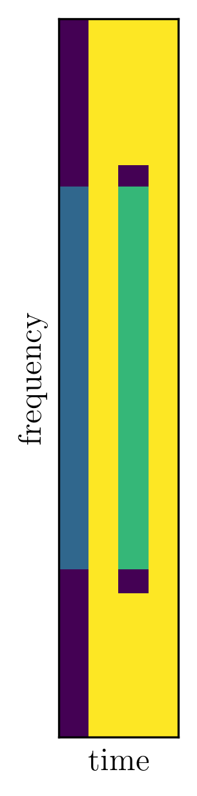

NR - Cell Search
Table of Contents
Synchronization signals
In NR, synchronization signals consist of primary synchronization signal (PSS) and secondary synchronization signal (SSS). Together with physical broadcast channel (PBCH), PSS and SSS are jointly termed synchronization signal block (SSB1).
A SSB spans 4 OFDM symbols in the time domain and 240 subcarriers in the frequency domain. Within a SSB, the PSS and SSS lie in the 1st and 3rd symbol, respectively. The PBCH situates in the 2nd and 4th symbols, as well as the 48 subcarriers on the each side of the SSS (in the 3rd symbol), as shown in the figure below. Therefore, within a SSB, there are totally \(240 + 48 \times 2 + 240 = 576\) RE's for PBCH transmission2.

Figure 1: SSB
It should be noted that 60kHz numerology cannot be used for SSB transmission.
The SSB is periodically transmitted and the periodicity can be 5/10/20/40/80/160ms. But a UE always assumes that a SSB is repeated at least once every 20ms no matter whether it is the truth.
PSS
Similar to LTE, there are 3 PSS sequences, including a basic m-sequence of length 127, and its two cyclically shifted versions3. The initial values of the basic sequence are {0, 1, 1, 0, 1, 1, 1}. The subsequent values can be derived according to
\begin{align*} x_0(n) = x_0(n - 7) \oplus x_0(n - 3). \end{align*}Then, the cyclically shifted sequences can be obtained by
\begin{align*} x_1(n) = x_0(n + 43 \mod 127), \\ x_2(n) = x_0(n + 86 \mod 127). \end{align*}SSS
There are 336 SSS sequences which are the sums of two m-sequences with different shifts, i.e.,
\begin{align*} x_{m_1, m_2}(n) = x(n + m_1) + y(n + m_2), \end{align*}where the two m-sequences can be obtained according to
\begin{align*} x(n) = x(n - 7) \oplus x(n - 3), \\ y(n) = y(n - 7) \oplus y(n - 6). \end{align*}Synchronization raster
Different from the strategy in LTE where the PSS/SSS is always transmitted at the center of a carrier in the frequency domain, SSB in NR is transmitted on a sparser synchronization raster.
Synchronization signal burst set
Targetting effective coverage, a series of SSB's are transmitted using different analog beams in a TDM way. Accordingly, a set of SSB's within a beam sweeping cycle is referred to as an synchronization signal burst set4.
The size of a synchronization signal burst set, i.e., the number of SSB's within a burst set, can vary from 1 to a maximum, which depends on the carrier frequency, as shown in the table below.
| Carrier frequency | The maximum size of a |
|---|---|
| synchronization signal burst set | |
| FR1 below 3GHz | 4 |
| FR1 above 3GHz and below 6GHz | 8 |
| FR2 | 64 |
Within a burst set, there may be SSB transmission in any of the first 4 or 2 (for FR1 below 3GHz) slots. In each of these slots, there can be up to 2 SSB's, symbols 2-5 and 8-11. The first and last 2 symbols are dedicated to donwlink and uplink control signalling, respectively.
The PSS/SSS only depends on the physical cell identity (PCI), i.e., the PSS/SSS across SSB's are identical and cannot be used for frame timing. Thus, a relative SSB time index is included in the PBCH.
PBCH
The PBCH carries the master information block (MIB). The information carried by PBCH can be listed in the table below.
| Information | Bit width |
|---|---|
| SSB time index5 | 0 for FR1 and 3 for FR2 |
| CellBarred flag | 26 |
| 1st PDSCH DMRS position7 | 1 |
| SIB1 numerology | 1 |
| SIB1 configuration8 | 8 |
| Common resource block (CRB) grid offset | 5 for FR1 and 4 for FR2 |
| Half-frame bit9 | 1 |
| System frame number (SFN) | 10 |
| Cyclic redundancy check (CRC) | 24 |
SSB time index is jointly provided by an implicit part, i.e., 8 different scrambling patterns, and an explicit part, i.e., payload in PBCH. For FR1, there are at most 8 SSB's within a synchronization signal burst set and can be fully indicated by the 8 scrambling patterns. Therefore, there is no "SSB time index" field in the PBCH.
The filed of "CRB grid offset" only indicates the offset between the SSB and the CRB grid. The absolute position of a SSB within the overall carrier is provided by SIB1.
Remaining minimum system information (RMSI)
In NR, except the quite limited information within MIB, system information is carried by different system information blocks (SIB's).
SIB1, also referred to as remaining minimum system information (RMSI), is transmitted as an ordinary PDSCH every 160ms. Other SIB's are not needed to know before access. These SIB's can be broadcast as periodically as SIB1 or transmitted on demand, i.e., at a UE's request.
Footnotes:
Sometimes, a SSB only includes PSS and SSS.
Including the DMRS RE's for coherent demodulation of PBCH.
The values for cyclic shift are 43 and 86.
Synchronization signal burst is an intermediate conception in the 3GPP discussion, but the synchronization signal burst set is retained.
Used for half-frame timing.
The 2 bits indicate the accessibilities of the target cell and other intra-frequency cells, respectively.
Under the assumption of DMRS mapping type A.
Necessary information for SIB1 monitoring, e.g., search space, corresponding CORESET, and other PDCCH-related parameters.
It indicates if the SSB is located in the 1st or 2nd 5ms part of a 10ms frame. In this sense, it is used for frame timing.